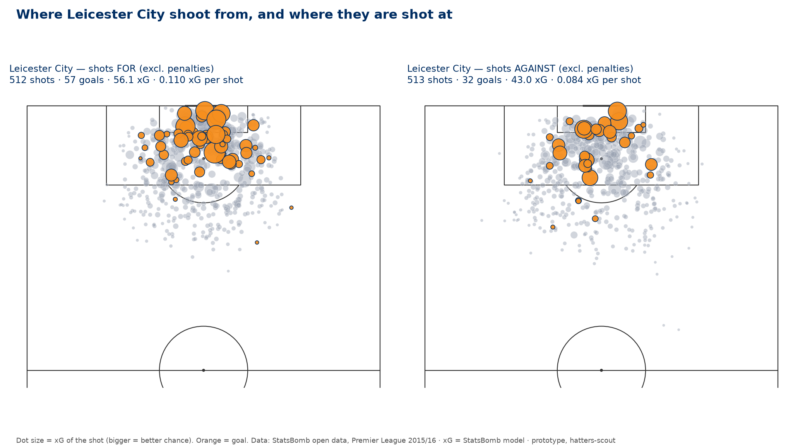

Luton Town host Cambridge United at Kenilworth Road on Saturday 14 November, 15:00 UK, as listed by fixture sites; the club has not confirmed it. Figures run to the 1–1 draw at Huddersfield Town on 3 November. A BBC Sport headline reports an FA Cup win over Forest Green Rovers; score, scorers and team news are unconfirmed.
Full analysisWhat the figures cover, the cup week, and what is unreported2 min
Data through Wednesday 4 November 2026. football-data.co.uk's results file holds 14 Luton Town league games. The last is the 1–1 draw at Huddersfield Town on Tuesday 3 November. Every club near Luton in the table has played 13 or 14; Oxford United, two points ahead in 3rd, have a game in hand.
The next match. Cambridge United at home, Kenilworth Road, Saturday 14 November, 15:00 UK, League One. Fixture sites list the game for that date and time. The club, the EFL and BBC Sport have not confirmed it, so treat the date as provisional.
Not in the figures: the FA Cup. A match preview listed Luton v Forest Green Rovers, first round, at Kenilworth Road on Saturday 7 November, 15:00 UK. A BBC Sport video headline of 7 November reports that Jack Wilshere's Luton reached round two by beating Forest Green. The report behind the headline has not been read. Luton also beat Forest Green in last season's first round, 4–3 on 31 October 2025 according to the FA's match report, so the headline on its own cannot settle which tie it describes. The score and scorers of the 2026 tie have not been confirmed by a club, BBC Sport or Luton Today report. Cup games are not in the results file.
Cambridge United went out of the same competition the night before. A BBC Sport video headline of 6 November reports a defeat by Bristol Rovers, in a tie a fixture listing places at the Memorial Stadium on Friday 6 November. The score has not been found.
Not yet reported. Who scored at Huddersfield and how the goals went in. Team news for Saturday: the fitness of Jordan Clark (CM), whether James Shea (GK) or Josh Keeley (GK) is in goal, whether Callum Marshall (CF) and Nahki Wells (CF) start, and any new injury or suspension. Jack Wilshere's pre-match press conference, usually held on a Thursday or Friday. Cambridge United's injuries and likely line-up.
Everything below comes from results and football-data.co.uk's , whose underlying model is not published. The data covers teams only, with no player, possession or pressing figures.
Expected goals (xG): How many goals a set of chances would usually produce, based on thousands of similar shots. A penalty is worth about 0.8; a shot from 30 yards about 0.03.Where things stand league position · the manager · availability
Luton are 4th of 24 on 24 points from 14 games, with 13 from the last five (WWWWD). They are also 4th on (+0.51 a game), so table and numbers agree. The season-long leak has eased: over the last five they conceded 1.0 goal fewer than expected. Five games is a small sample.
Expected-goal difference: The value of the chances a team creates minus the value of the chances it allows. A positive number means a team usually makes better chances than its opponents, whatever the scoreline says.Full analysisTable, form, underlying numbers and the home–away split3 min
Luton Town are 4th of 24 in League One on 24 points from 14 games: seven wins, three draws and four defeats, with 27 scored and 21 conceded. Their form over the last five is WWWWD, 13 points from a possible 15. That run was home wins over Barnsley, Leicester City and Doncaster Rovers, a 2–0 win at Peterborough United and the 1–1 draw at Huddersfield Town on 3 November. They are unbeaten in five, their best run of the season, and have scored in seven league games in a row. After their first nine games, to 17 October, they had 11 points.
Huddersfield lead on 29 points. Stockport County (26 from 14) and Oxford United (26 from 13) are two points ahead of Luton, and Oxford have a . Plymouth Argyle (23) and Reading (22) are just behind, with Bradford City (22 from 13) seventh.
Games in hand: Matches a team has still to play that its rivals have already played, usually because of a postponement. It means the league table is not comparing like with like yet.The table has caught up with the numbers
On football-data.co.uk's , whose model is not published, Luton create 1.62 a game, 7th, and allow 1.11 (), 5th. Their of +0.51 a game is 4th, the same as their league position. For most of the autumn they sat well below that measure. The last five games closed the gap.
Expected goals (xG): How many goals a set of chances would usually produce, based on thousands of similar shots. A penalty is worth about 0.8; a shot from 30 yards about 0.03.Expected goals against: The value of the chances a team allows its opponents. A low number means it is keeping the opposition to poor, difficult shots.Expected-goal difference: The value of the chances a team creates minus the value of the chances it allows. A positive number means a team usually makes better chances than its opponents, whatever the scoreline says.Where the gap was, and whether it is closing
At the back. Across the season Luton have conceded 21 goals from chances worth 15.6. That is 5.4 more than expected, 22nd of 24 (). Over the last five, though, they conceded 1.0 fewer than expected. Only 17% of the they faced went in, against 36% for the season and a league average of 32%. They faced slightly more shots in that run, 13.2 a game against 12.2 for the season. The change is in what happened to the shots, not how many there were. None of the four goals they conceded in those five games came before half-time.
Goals conceded minus expected: The gap between the goals a team has let in and what the chances it allowed were worth. A big positive number means it is conceding more than the quality of those chances would normally produce: poor goalkeeping, bad luck, or defending that falls apart at the decisive moment.Shots on target: Shots that would have gone in had the goalkeeper not saved them, plus those that did go in. Shots blocked by a defender or missing the goal do not count.In attack. Luton have scored 27 from chances worth 22.7, 4.3 more than expected (, 2nd), and 1.9 more over the last five. Reasoning, not fact: across the season the two gaps roughly cancel, which is why a goal difference of +6 sits close to what the chances alone would suggest. Of the two, the finishing above expectation is the more likely to fade.
Goals minus expected goals: The gap between what a team actually scored and what its chances were worth. A big positive number means unusually good finishing, unusual luck, or both — and it tends to drift back towards zero over a season.Home and away
Luton take 2.00 points a game at home and 1.43 away. They concede 1.00 goal a game at Kenilworth Road and 2.00 away, the third-biggest home–away gap in the league. Their xGA is 0.80 a game at home and 1.43 away. The next game is at home.
Outside the league, a BBC Sport headline of 7 November reports Luton into the FA Cup second round after beating Forest Green Rovers. The result is not confirmed by a report, and cup games are not in these figures.
- Position
- 4th of 24, 24 points from 14 games
- Form (last five)
- WWWWD, 13 points
- Expected goal difference
- +0.51 a game, 4th of 24 (last five +0.62)
- Conceded against expected
- 21 from 15.6, 22nd of 24 (last five −1.0)
- xGA home and away
- 0.80 and 1.43 a game
- Next
- Cambridge United (h), Sat 14 Nov, 15:00 UK (listed by fixture sites, not confirmed by the club)
Limits: the data covers teams only, with no player, possession or pressing figures. Fourteen games is a small sample and five is smaller still, so treat the ranks as a rough guide.
Four numbers pointed at Cambridge on Sat 14 Nov. Team-level data from football-data.co.uk's xG through 4 Nov 2026; ranks are out of 24 clubs. The xG model is unattributed.
Last match Huddersfield Town 1–1 Luton Town · Tue 3 Nov
Luton drew 1–1 at league leaders Huddersfield Town on 3 November after leading at half-time. Their 0.61 was their lowest of the season, against 0.96 for Huddersfield, who had six to Luton's four. The scorers are not yet reported. One match proves little.
Expected goals (xG): How many goals a set of chances would usually produce, based on thousands of similar shots. A penalty is worth about 0.8; a shot from 30 yards about 0.03.Shots on target: Shots that would have gone in had the goalkeeper not saved them, plus those that did go in. Shots blocked by a defender or missing the goal do not count.Full analysisHuddersfield away: the start, the quiet attack and the defending2 min
Luton Town's last league match in the data is the 1–1 draw at Huddersfield Town on Tuesday 3 November. Their FA Cup tie the following weekend is not in the data and its result is not confirmed, so this section covers Huddersfield only.
- Score
- Huddersfield Town 1–1 Luton (Luton led 1–0 at half-time)
- Shots
- 9–12 (Luton first)
- Shots on target
- 4–6
- Expected goals
- 0.61–0.96
Three things stand out.
First, the start. Luton led at half-time for the fifth game running and the sixth time in 14. They had not led at the break in any of their first seven league games. They have not conceded a first-half goal in any of the last five.
Second, the attack was quiet. On football-data.co.uk's expected goals (xG; the model is not published), Luton's chances were worth 0.61. That is their lowest in a league game this season, against a season average of 1.62. Their nine shots were their second-fewest, after the seven at home to Stockport County, and they scored with one of four .
Shots on target: Shots that would have gone in had the goalkeeper not saved them, plus those that did go in. Shots blocked by a defender or missing the goal do not count.Third, the defence held against the best side on the numbers. Huddersfield are top on 29 points and lead the league on expected goal difference, +1.25 a game. They had 12 shots, six on target, worth 0.96, and scored once. Luton's on the night was below their away average of 1.43.
Expected goals against: The value of the chances a team allows its opponents. A low number means it is keeping the opposition to poor, difficult shots.The point keeps Luton unbeaten in five and five points behind Huddersfield. The scorers for either side, how the goals went in, the line-ups and any cards are not in the data file and have not yet been reported.
Reasoning, not fact: one match proves little either way. A draw away to the leaders after leading at half-time fits two recent patterns, the quick starts and the tighter defending. The low chance count runs against everything else in Luton's season, and a single game cannot show whether it is a blip or a sign.
Next up Cambridge United (h) · Sat 14 Nov · League One
Luton host Cambridge United at Kenilworth Road on Saturday 14 November, 15:00 UK, as listed by fixture sites. Cambridge are 8th on 21 points but 16th on (−0.24 a game), without a league win in four and reported out of the FA Cup. They score late: 18 of 21 goals after half-time.
Expected-goal difference: The value of the chances a team creates minus the value of the chances it allows. A positive number means a team usually makes better chances than its opponents, whatever the scoreline says.Full analysisCambridge United's season, team news status and four things to watch3 min
Luton Town v Cambridge United, Kenilworth Road, Saturday 14 November, 15:00 UK, League One. Fixture sites list the match for that date and time. The club, the EFL and BBC Sport have not confirmed it.
The opponent
Cambridge United are 8th on 21 points from 14 games: five wins, six draws and three defeats, with 21 scored and 21 conceded. Their form over the last five is WDLDL, 5 points. They are without a league win in four, after an eight-game unbeaten run earlier in the season. Their last league match in the data was a 3–0 defeat at Leyton Orient on 31 October in which the chances were close: 1.94 expected goals to Orient's 2.03. A BBC Sport video headline of 6 November reports an FA Cup defeat by Bristol Rovers; the report has not been read and the score has not been found.
On football-data.co.uk's , whose model is not published, Cambridge create 1.30 a game, 15th, and allow 1.54 (), 17th. Their of −0.24 a game is 16th, eight places below their league position. They shoot often, 14.4 times a game (10th), but their chances are modest: , 20th. Away from home they take 1.43 points a game. In seven away games they have scored 9 and conceded 10, with an xG of 1.29 a game and an xGA of 1.71.
Expected goals (xG): How many goals a set of chances would usually produce, based on thousands of similar shots. A penalty is worth about 0.8; a shot from 30 yards about 0.03.Expected goals against: The value of the chances a team allows its opponents. A low number means it is keeping the opposition to poor, difficult shots.Expected-goal difference: The value of the chances a team creates minus the value of the chances it allows. A positive number means a team usually makes better chances than its opponents, whatever the scoreline says.Expected goals per shot: The average quality of the chances a team takes. A high number means it shoots from good positions rather than hopefully from distance.Team news
Not yet reported for either side. For Luton that includes the fitness of Jordan Clark (CM), who starts in goal between James Shea (GK) and Josh Keeley (GK), and whether Callum Marshall (CF) and Nahki Wells (CF) start. Luton are reported, by headline only, to have played an FA Cup tie against Forest Green Rovers on 7 November; who played in it is not confirmed. Cambridge's injuries and likely line-up are not yet reported either.
Four things to watch from kickoff
- Which half matters. Luton have led at half-time in each of their last five league games and conceded no first-half goal in any of them. Cambridge have scored only 3 of their 21 goals before the break. They have led at half-time once in 14 games and been behind in seven. All four goals Luton conceded in their last five came after half-time, and Cambridge have scored 18 after it. Reasoning, not fact: on those patterns the first half is Luton's to shape, and the danger comes later.
- Corners. Cambridge win 8.4 corners a game, the most in League One, and 10.8 over the last five. Luton concede 4.7, 6th fewest. Watch whether Cambridge's pressure turns into corners and what comes of them. The data does not record how many goals either side scores from . Set piece: A chance that starts from a stopped ball: a corner, a free kick, a throw-in routine or a penalty. Teams rehearse these, so they are the part of a match most open to coaching.
- Cambridge's shot volume against Luton's home defence. At home Luton allow 0.80 xG a game and have conceded 7 goals in seven games. Cambridge take plenty of shots, but mostly modest ones. Watch whether their shot count turns into clear chances, not just how many shots they have.
- Luton's finishing against Cambridge's goalkeeping. Luton have scored with 38% of their , 2nd in the league. Of the on-target shots Cambridge face, 39% go in (22nd), rising to 45% over the last five. If both rates hold, Luton will not need many chances. Reasoning, not fact: these are the rates that move most from game to game. Shots on target: Shots that would have gone in had the goalkeeper not saved them, plus those that did go in. Shots blocked by a defender or missing the goal do not count.
Limits: team-level data only, 14 league games for each side, and neither side's cup game is included. The watch list is reasoning from tendencies, not a forecast, and one match will not confirm or overturn any of them.
The matchup in numbers Luton's tendencies against Cambridge's · team-level data through 4 Nov 2026
Luton create 1.62 a game (7th of 24), 1.78 at home. Cambridge allow 1.54 (17th), 1.71 away, and 39% of the they face go in (22nd). Reasoning, not fact: on paper Luton's attack has the edge, though their last league game produced their lowest chance total of the season, 0.61.
Expected goals (xG): How many goals a set of chances would usually produce, based on thousands of similar shots. A penalty is worth about 0.8; a shot from 30 yards about 0.03.Shots on target: Shots that would have gone in had the goalkeeper not saved them, plus those that did go in. Shots blocked by a defender or missing the goal do not count.Full analysisLuton's attack against Cambridge's defence, season and last five2 min
Luton's attack
On football-data.co.uk's , whose model is not published, Luton create 1.62 a game, 7th of 24, and 1.63 over the last five. They take 14.6 shots a game (8th) and put 5.1 on target (4th), 5.8 over the last five. Their is , 6th, and 0.113 over the last five, against a league average of 0.101. They have scored 4.3 more than their xG (, 2nd) and put away 38% of their (, 2nd).
Expected goals (xG): How many goals a set of chances would usually produce, based on thousands of similar shots. A penalty is worth about 0.8; a shot from 30 yards about 0.03.Chance quality: How good a team's chances are, rather than how many it has. Ten shots from the edge of the box are worth far more than twenty from range.Expected goals per shot: The average quality of the chances a team takes. A high number means it shoots from good positions rather than hopefully from distance.Goals minus expected goals: The gap between what a team actually scored and what its chances were worth. A big positive number means unusually good finishing, unusual luck, or both — and it tends to drift back towards zero over a season.Shots on target: Shots that would have gone in had the goalkeeper not saved them, plus those that did go in. Shots blocked by a defender or missing the goal do not count.On-target conversion: The share of shots on target that end up as goals. Used at both ends: how many of a team's own on-target shots score, and how many of the ones it faces get past its goalkeeper. Around a third is normal.On chances the attack is stronger at home, 1.78 xG a game against 1.46 away, though Luton have scored 12 at home and 15 away. The exception lately was Huddersfield Town away on 3 November, where their chances were worth 0.61 from nine shots, their lowest of the season.
Cambridge's defence
Cambridge United allow 1.54 xG a game (, 17th), 1.75 over the last five and 1.71 away from home. Yet they face only 12.8 shots a game (9th fewest) and 3.9 on target (8th). Reasoning, not fact: few shots but a high xGA means the shots they allow tend to be good ones. They also let in 39% of the shots on target they face (22nd), and 45% over the last five. They have kept one in 14 games, in the 1–0 home win over Blackpool. They concede more after half-time, 13 goals against 8 before it. Their last two league games were open: chances worth 1.70 against them at Sheffield Wednesday and 2.03 at Leyton Orient.
Expected goals against: The value of the chances a team allows its opponents. A low number means it is keeping the opposition to poor, difficult shots.Clean sheet: A match in which a team concedes no goals.Where the two meet
Reasoning, not fact: on chances this is a top-seven attack, stronger at home, against a defence in the bottom eight on xGA and worse away. The finishing comparison points the same way: Luton score with 38% of their shots on target, and Cambridge let in 39% of those they face. The caution is that both rates swing on a handful of shots, and Luton's lowest chance total of the season came in their last league game. One low game is not a trend, and fourteen games each is a small sample.
Table view
| Team | P | xG for /g | xG against /g | xG diff /g |
|---|---|---|---|---|
| Huddersfield | 14 | 2.13 | 0.88 | +1.25 |
| Stockport | 14 | 2.07 | 1.06 | +1.01 |
| Reading | 14 | 1.83 | 1.07 | +0.76 |
| Luton Town | 14 | 1.62 | 1.11 | +0.51 |
| Leicester | 13 | 1.70 | 1.26 | +0.44 |
| Mansfield | 13 | 1.60 | 1.20 | +0.40 |
| Sheffield Wednesday | 13 | 1.67 | 1.41 | +0.25 |
| MK Dons | 13 | 1.66 | 1.45 | +0.21 |
| Bradford City | 13 | 1.11 | 0.96 | +0.16 |
| Wycombe | 13 | 1.42 | 1.35 | +0.07 |
| Plymouth | 14 | 1.44 | 1.43 | +0.01 |
| Peterborough | 13 | 1.45 | 1.46 | -0.01 |
| Stevenage | 12 | 1.09 | 1.14 | -0.05 |
| Oxford | 13 | 1.44 | 1.56 | -0.12 |
| Notts County | 12 | 1.11 | 1.26 | -0.15 |
| Cambridge | 14 | 1.30 | 1.54 | -0.24 |
| Leyton Orient | 13 | 1.22 | 1.52 | -0.30 |
| Barnsley | 12 | 1.31 | 1.69 | -0.38 |
| Wigan | 14 | 1.38 | 1.83 | -0.45 |
| Doncaster | 13 | 1.06 | 1.60 | -0.54 |
| Blackpool | 12 | 1.28 | 1.89 | -0.61 |
| Burton | 14 | 0.88 | 1.50 | -0.62 |
| AFC Wimbledon | 13 | 0.87 | 1.63 | -0.76 |
| Bromley | 13 | 0.82 | 1.93 | -1.11 |
Luton's defence is much stronger at home: 0.80 a game at Kenilworth Road against 1.43 away, and 7 goals conceded in seven home games. Cambridge shoot often but from modest chances, (20th), and score late. Over the last five, only 17% of against Luton went in.
Expected goals against: The value of the chances a team allows its opponents. A low number means it is keeping the opposition to poor, difficult shots.Expected goals per shot: The average quality of the chances a team takes. A high number means it shoots from good positions rather than hopefully from distance.Shots on target: Shots that would have gone in had the goalkeeper not saved them, plus those that did go in. Shots blocked by a defender or missing the goal do not count.Full analysisLuton's defence against Cambridge's attack, timing and corners3 min
Luton's defence
By volume Luton defend well. They face 12.2 shots a game (6th fewest) and allow 1.11 a game, 5th, on football-data.co.uk's , whose model is not published. They face an average number of , 4.2 a game, 13th. Across the season the problem has been how many of those go in: 36%, against a league average of 32%, 18th of 24.
Expected goals against: The value of the chances a team allows its opponents. A low number means it is keeping the opposition to poor, difficult shots.Expected goals (xG): How many goals a set of chances would usually produce, based on thousands of similar shots. A penalty is worth about 0.8; a shot from 30 yards about 0.03.Shots on target: Shots that would have gone in had the goalkeeper not saved them, plus those that did go in. Shots blocked by a defender or missing the goal do not count.The last five tell a different story. Luton faced more shots, 13.2 a game with 4.6 on target, but only 17% of those on target went in. They conceded four goals, 1.0 fewer than their chances allowed, from an xGA of 1.01 a game.
Two patterns stand out. At home Luton allow 0.80 xG a game and concede 1.00 goal; away the figures are 1.43 and 2.00. In goals conceded that is the third-biggest home–away gap in the league. The timing has also flipped. Eleven of the 21 goals conceded this season came before half-time, but none of the four in the last five games.
Cambridge's attack
Cambridge United take 14.4 shots a game (10th) and put 4.9 on target (7th); over the last five those figures are 15.8 and 5.6. They make 1.30 xG a game (15th), 1.61 over the last five, from , 20th of 24 (0.102 over the last five). Across the season they have scored 2.8 more than their xG (, 6th). Over the last five they scored 1.0 fewer. They have scored with 31% of their shots on target (17th), and 25% over the last five. Away from home they make 1.29 xG a game and have scored 9 goals in seven games.
Expected goals per shot: The average quality of the chances a team takes. A high number means it shoots from good positions rather than hopefully from distance.Goals minus expected goals: The gap between what a team actually scored and what its chances were worth. A big positive number means unusually good finishing, unusual luck, or both — and it tends to drift back towards zero over a season.Timing is their sharpest pattern. Eighteen of Cambridge's 21 goals have come after half-time and 3 before it, 14% in the first half. They also win 8.4 corners a game, the most in the league.
Where the two meet
Reasoning, not fact: Luton's home record says they allow few chances, and Cambridge's season says most of theirs are modest. The contest is in the second half, when Cambridge score almost all their goals and when Luton conceded all four of their recent ones. On , Cambridge win 8.4 corners a game (1st) and Luton concede 4.7 (6th fewest), so one of those tendencies has to give.
Set piece: A chance that starts from a stopped ball: a corner, a free kick, a throw-in routine or a penalty. Teams rehearse these, so they are the part of a match most open to coaching.The free data does not record how goals were scored. It cannot separate the goalkeeper, the defenders in front of him and set pieces as causes of Luton's improvement over the last five, any more than of their earlier conceding. Who starts in goal on Saturday, James Shea (GK) or Josh Keeley (GK), is not yet reported.
Luton · 14 games
Table view
| Match | Expected against | Conceded | Gap |
|---|---|---|---|
| @ Reading · 15 Aug | 1.77 | 3 | +1.23 |
| v Notts County · 22 Aug | 0.79 | 2 | +1.21 |
| @ Mansfield · 30 Aug | 1.37 | 5 | +3.63 |
| v Stockport · 2 Sep | 0.85 | 0 | -0.85 |
| v Leyton Orient · 5 Sep | 0.56 | 1 | +0.44 |
| @ Stevenage · 10 Sep | 1.28 | 2 | +0.72 |
| v Bradford City · 19 Sep | 0.29 | 1 | +0.71 |
| @ Wycombe · 10 Oct | 2.20 | 1 | -1.20 |
| @ MK Dons · 17 Oct | 1.45 | 2 | +0.55 |
| v Barnsley · 20 Oct | 1.01 | 1 | -0.01 |
| v Leicester · 24 Oct | 1.03 | 1 | -0.03 |
| v Doncaster · 27 Oct | 1.05 | 1 | -0.05 |
| @ Peterborough · 31 Oct | 0.98 | 0 | -0.98 |
| @ Huddersfield · 3 Nov | 0.96 | 1 | +0.04 |
Cambridge · 14 games
Table view
| Match | Expected against | Conceded | Gap |
|---|---|---|---|
| v Wigan · 15 Aug | 2.72 | 2 | -0.72 |
| @ Bromley · 22 Aug | 0.61 | 1 | +0.39 |
| v Huddersfield · 29 Aug | 1.12 | 2 | +0.88 |
| @ Bradford City · 1 Sep | 2.18 | 1 | -1.18 |
| @ Burton · 5 Sep | 2.31 | 2 | -0.31 |
| v Reading · 12 Sep | 1.41 | 1 | -0.41 |
| @ Oxford · 19 Sep | 0.88 | 1 | +0.12 |
| v AFC Wimbledon · 26 Sep | 0.86 | 1 | +0.14 |
| v Blackpool · 10 Oct | 0.69 | 0 | -0.69 |
| @ Barnsley · 17 Oct | 2.25 | 1 | -1.25 |
| v Wycombe · 20 Oct | 1.27 | 2 | +0.73 |
| v Plymouth · 24 Oct | 1.51 | 3 | +1.49 |
| @ Sheffield Wednesday · 27 Oct | 1.70 | 1 | -0.70 |
| @ Leyton Orient · 31 Oct | 2.03 | 3 | +0.97 |
Luton's season-long leak is closing. They have conceded (22nd), but 1.0 fewer than expected over the last five. Their finishing runs hot, 4.3 goals above their (2nd). Cambridge have outscored their chances by 2.8 this season, but not lately. Five games cannot separate luck from a real change.
Goals conceded minus expected: The gap between the goals a team has let in and what the chances it allowed were worth. A big positive number means it is conceding more than the quality of those chances would normally produce: poor goalkeeping, bad luck, or defending that falls apart at the decisive moment.Expected goals (xG): How many goals a set of chances would usually produce, based on thousands of similar shots. A penalty is worth about 0.8; a shot from 30 yards about 0.03.Full analysisGoals against expected goals for both sides: luck or change3 min
estimate how many goals a side's chances were worth. The figures here are football-data.co.uk's, and the model behind them is not published. The gap between goals and xG measures finishing and goalkeeping, plus luck.
Expected goals (xG): How many goals a set of chances would usually produce, based on thousands of similar shots. A penalty is worth about 0.8; a shot from 30 yards about 0.03.The two sides side by side
- Luton, conceded against expected
- 21 from 15.6: +5.4, 22nd of 24 (last five −1.0)
- Cambridge, conceded against expected
- −0.5, 11th (last five +1.2)
- Luton, scored against expected
- 27 from 22.7: +4.3, 2nd (last five +1.9)
- Cambridge, scored against expected
- +2.8, 6th (last five −1.0)
Luton's conceding gap was the defining number of their autumn. After their first nine games, to 17 October, they had conceded 17 goals from chances worth about 10.6, some 6.4 more than expected, and 47% of the on-target shots against them had gone in. Since then the season gap has narrowed to 5.4 and the season rate has fallen to 36%. Over the last five Luton conceded 1.0 fewer than expected (). Only 17% of the against them went in, about half the league average of 32%.
Goals conceded minus expected: The gap between the goals a team has let in and what the chances it allowed were worth. A big positive number means it is conceding more than the quality of those chances would normally produce: poor goalkeeping, bad luck, or defending that falls apart at the decisive moment.Shots on target: Shots that would have gone in had the goalkeeper not saved them, plus those that did go in. Shots blocked by a defender or missing the goal do not count.At the other end Luton are 4.3 goals ahead of their xG (), 1.9 of it over the last five, and they score with 38% of their shots on target, 2nd. Reasoning, not fact: across the season the two gaps nearly cancel. Luton's goal difference of +6 is close to the gap between their chances for and against (22.7 and 15.6). Over the last five both gaps have run in Luton's favour, which flatters the 13 points a little.
Goals minus expected goals: The gap between what a team actually scored and what its chances were worth. A big positive number means unusually good finishing, unusual luck, or both — and it tends to drift back towards zero over a season.Cambridge are the reverse case in the table: 8th on points but 16th on , eight places better off than the underlying numbers. Across the season their scoring has run ahead of their chances, 2.8 above xG. Over the last five it fell 1.0 below, and they conceded 1.2 more than expected. Their measures disagree on defending. By xG they concede roughly what their opponents' chances deserve, yet 39% of the shots on target they face go in, 22nd. Reasoning, not fact: that fits a side whose opponents get few shots but good ones.
Expected-goal difference: The value of the chances a team creates minus the value of the chances it allows. A positive number means a team usually makes better chances than its opponents, whatever the scoreline says.Luck or change?
Reasoning, not fact: for most teams, gaps like Luton's shrink over a season, because a handful of shots going in or staying out swings a run of games. The last five look like that happening. They could also show a real change: a goalkeeper in form, or a back line letting fewer dangerous shots through on target. The team-level data cannot tell those apart. Five good games after nine bad ones prove little either way, and Saturday will not settle it.
Limits: team-level data only, with no player attribution, shot locations or set-piece split in the free data. Neither side's cup game is included.
Table view
| Team | Conceded | Expected | Gap |
|---|---|---|---|
| Oxford | 11 | 20.3 | -9.3 |
| Leyton Orient | 14 | 19.8 | -5.8 |
| Bradford City | 8 | 12.4 | -4.4 |
| Sheffield Wednesday | 14 | 18.4 | -4.4 |
| Wigan | 22 | 25.7 | -3.7 |
| Blackpool | 21 | 22.7 | -1.7 |
| Notts County | 14 | 15.1 | -1.1 |
| Plymouth | 19 | 19.9 | -0.9 |
| Stockport | 14 | 14.8 | -0.8 |
| Stevenage | 13 | 13.7 | -0.7 |
| Cambridge | 21 | 21.5 | -0.5 |
| Huddersfield | 12 | 12.3 | -0.3 |
| AFC Wimbledon | 21 | 21.2 | -0.2 |
| Reading | 15 | 15.0 | +0.0 |
| Burton | 21 | 21.0 | +0.0 |
| MK Dons | 20 | 18.9 | +1.1 |
| Doncaster | 22 | 20.8 | +1.2 |
| Barnsley | 22 | 20.2 | +1.8 |
| Mansfield | 18 | 15.6 | +2.4 |
| Leicester | 19 | 16.4 | +2.6 |
| Peterborough | 23 | 19.0 | +4.0 |
| Luton Town | 21 | 15.6 | +5.4 |
| Wycombe | 23 | 17.5 | +5.5 |
| Bromley | 33 | 25.1 | +7.9 |
Squad tracker 14 league games, to 4 Nov · team level
No team news has been confirmed for Saturday. Still not reported: who scored at Huddersfield Town, Luton's FA Cup result, the fitness of Jordan Clark (CM), whether James Shea (GK) or Josh Keeley (GK) is in goal, and whether Callum Marshall (CF) and Nahki Wells (CF) start. Cambridge United's team news is not reported either.
Full analysisAvailability, selection and discipline: what is known and what is not2 min
Luton drew 1–1 at Huddersfield Town on 3 November and were due to play an FA Cup tie the following weekend. A Luton Today headline of 7 November reports seven changes for that tie. The line-ups and scorers from both games have not been reported, the cup result is not confirmed, and no team news for Saturday has been confirmed.
- Jordan Clark (CM)
- Fitness and availability not reported, including whether he played at Huddersfield or in the cup.
- Goalkeeper: James Shea (GK) or Josh Keeley (GK)
- Shea replaced Keeley in goal on 19 September. Who started at Huddersfield, and who starts on Saturday, has not been reported.
- Strikers: Callum Marshall (CF) and Nahki Wells (CF)
- Selection and scorers in recent games not reported. A Luton Today headline of 6 November mentions a striker in line to face ‘Rovers’ and the club being pleased that Wells will not be away. The report was not read, so what it means for either player is not confirmed.
- Discipline
- A BBC Sport headline of 2 November reports Luton and Barnsley fined over a mass confrontation; the occasion and the size of the fines are not confirmed. Luton have averaged 1.71 cards a game this season and 1.20 over the last five.
- New injuries or suspensions
- None confirmed, and none ruled out.
- Cambridge United
- Injuries, suspensions and likely line-up not reported.
What the data can add: nothing at player level. The results file covers teams only, so who played, who scored and who was in goal for each goal against are not in it. Those questions are answered from line-ups and beat reporting, by eye.
Season state table · the schedule
Fourteen games in, Luton are 4th on 24 points, five behind leaders Huddersfield Town and two off the top two. The seven clubs from 2nd to 8th are separated by five points. Luton's also ranks 4th. Games played range from 12 to 14, and several rivals have on Luton.
Expected-goal difference: The value of the chances a team creates minus the value of the chances it allows. A positive number means a team usually makes better chances than its opponents, whatever the scoreline says.Games in hand: Matches a team has still to play that its rivals have already played, usually because of a postponement. It means the league table is not comparing like with like yet.Full analysisThe table, games played, and the table against expected goals2 min
Luton Town are 4th on 24 points from 14 games. Huddersfield Town lead on 29 from 14. Stockport County (26 from 14) and Oxford United (26 from 13) are 2nd and 3rd. Behind Luton are Plymouth Argyle, 5th on 23, Reading, 6th on 22, Bradford City, 7th on 22 from 13, and Cambridge United, 8th on 21. Sheffield Wednesday have 20 from 13. At the bottom, Barnsley and Bromley have 9 points each.
| # | Club | P | Pts | GD | xGD /g |
|---|---|---|---|---|---|
| 1 | Huddersfield Town | 14 | 29 | +16 | +1.25 |
| 2 | Stockport County | 14 | 26 | +12 | +1.01 |
| 3 | Oxford United | 13 | 26 | +11 | −0.12 |
| 4 | Luton Town | 14 | 24 | +6 | +0.51 |
| 5 | Plymouth Argyle | 14 | 23 | +2 | +0.01 |
| 6 | Reading | 14 | 22 | +10 | +0.76 |
| 7 | Bradford City | 13 | 22 | +2 | +0.15 |
| 8 | Cambridge United | 14 | 21 | 0 | −0.24 |
| 9 | Sheffield Wednesday | 13 | 20 | +8 | +0.25 |
| 10 | Leicester City | 13 | 19 | +3 | +0.44 |
| 11 | Mansfield Town | 13 | 19 | +2 | +0.40 |
| 12 | MK Dons | 13 | 18 | +2 | +0.21 |
| 13 | Wycombe Wanderers | 13 | 18 | −2 | +0.07 |
| 14 | Leyton Orient | 13 | 17 | +5 | −0.30 |
| 15 | Burton Albion | 14 | 17 | −3 | −0.62 |
| 16 | Stevenage | 12 | 16 | +4 | −0.05 |
| 17 | Notts County | 12 | 14 | −1 | −0.15 |
| 18 | AFC Wimbledon | 13 | 13 | −12 | −0.76 |
| 19 | Blackpool | 12 | 12 | −4 | −0.61 |
| 20 | Doncaster Rovers | 13 | 12 | −8 | −0.54 |
| 21 | Wigan Athletic | 14 | 11 | −11 | −0.45 |
| 22 | Peterborough United | 13 | 10 | −12 | −0.01 |
| 23 | Barnsley | 12 | 9 | −10 | −0.38 |
| 24 | Bromley | 13 | 9 | −20 | −1.11 |
Games played differ, so read points with care. Eight clubs have played 14, including Luton; twelve have played 13 and four have played 12. Oxford, two points ahead of Luton, and Bradford, two behind, both have a game in hand. Luton have climbed from 16th since the table ran to 17 October, taking 13 points from five games.
The underlying ranking
On football-data.co.uk's expected goals (the model is not published), the top four on per game are Huddersfield (+1.25), Stockport (+1.01), Reading (+0.76) and Luton (+0.51). Next come Leicester City (+0.44) and Mansfield Town (+0.40). Three of those top four are also in the table's top four. Reading, 6th, rate better on the numbers than on points. Two sides stand out the other way: Oxford, 3rd with −0.12 a game, and Cambridge, 8th with −0.24. Plymouth, 5th, are at +0.01.
Expected-goal difference: The value of the chances a team creates minus the value of the chances it allows. A positive number means a team usually makes better chances than its opponents, whatever the scoreline says.Reasoning, not fact: for most of the autumn Luton's position lagged far behind their expected goal difference. It no longer does. Over a full season, expected goal difference tends to be a better guide to a side's level than the table, which makes Oxford's and Cambridge's places the ones to question now. Fourteen games is still a small sample.
Player watch standing interests
The data covers teams only, and neither the Huddersfield Town scorers nor a line-up for Saturday has been confirmed. The players to watch against Cambridge remain Jordan Clark (CM), whoever starts in goal (17% of against Luton went in over the last five, 36% this season), and the strikers Callum Marshall (CF) and Nahki Wells (CF).
Shots on target: Shots that would have gone in had the goalkeeper not saved them, plus those that did go in. Shots blocked by a defender or missing the goal do not count.Full analysisClark, the goalkeeper and the strikers, set against team figures2 min
football-data.co.uk's file has no player attribution: no scorers, no minutes and no individual . Everything below is what to watch by eye on Saturday, set against the team figures it might explain. No Luton line-up for the Cambridge game has been confirmed, and who scored at Huddersfield Town has not been reported.
Expected goals (xG): How many goals a set of chances would usually produce, based on thousands of similar shots. A penalty is worth about 0.8; a shot from 30 yards about 0.03.Jordan Clark (CM)
Availability not reported. The question remains the shape of Luton's attack, not only its finishing. Over the last five games the shot count has held steady, 14.4 a game against 14.6 for the season. Chance quality has stayed high, 0.113 xG a shot against 0.111, and more shots have been on target, 5.8 a game against 5.1. At Huddersfield it dipped: nine shots worth 0.61. Reasoning, not fact: whether any of that is linked to who plays in midfield cannot be read from team data.
The goalkeeper: James Shea (GK) or Josh Keeley (GK)
Shea replaced Keeley on 19 September. Who has started since, and who starts on Saturday, are not reported. Across the season 36% of the against Luton have gone in, 18th of 24. Over the last five it is 17%, and at Huddersfield one of six went in. The data cannot say how much of that turnaround belongs to the goalkeeper and how much to the defence in front of him, so watch how any goals go in rather than assuming.
Shots on target: Shots that would have gone in had the goalkeeper not saved them, plus those that did go in. Shots blocked by a defender or missing the goal do not count.Callum Marshall (CF) and Nahki Wells (CF)
Selection and scorers in recent games not reported. Luton have scored in seven league games in a row, and with 38% of their shots on target, 2nd in the league. Sixteen of their 27 goals have come after half-time. Watch who starts, who comes on, and whether the two play together. Reasoning, not fact: a finishing rate that high usually owes something to luck, and team data cannot show which striker, if either, is behind it.
Limits: the player reading here is by eye and from beat reporting, and no beat reporting has been confirmed for this match.
Talking points analytical observations only
Luton's conceding problem has eased: over the last five they let in 1.0 goal fewer than their , and only 17% of against them went in. With 13 points from 15 they are 4th in the table and 4th on the numbers. Five games is a small sample, and Cambridge's late goals will test it.
Expected goals against: The value of the chances a team allows its opponents. A low number means it is keeping the opposition to poor, difficult shots.Shots on target: Shots that would have gone in had the goalkeeper not saved them, plus those that did go in. Shots blocked by a defender or missing the goal do not count.Full analysisSeven arguments about Luton's rise, luck, timing and Cambridge3 min
- The table has caught up. Luton are 4th on (+0.51 a game) and 4th in the table. After their first nine games, to 17 October, they had 11 points. Reasoning, not fact: the long-running argument that Luton were better than their position has largely been settled by results. The new question is whether 4th is their level, since the model ranks Huddersfield Town, Stockport County and Reading above them. Expected-goal difference: The value of the chances a team creates minus the value of the chances it allows. A positive number means a team usually makes better chances than its opponents, whatever the scoreline says.
- The leak has slowed, at last. After nine games Luton had conceded about 6.4 goals more than their chances allowed. Now the figure is 5.4 (, 22nd of 24), and over the last five they conceded 1.0 fewer than expected. Only 17% of on-target shots against them went in, against 36% for the season. Reasoning, not fact: this is the first sustained sign of change. Whether it is luck evening out or something fixed in goal or at the back, the team data cannot say. Goals conceded minus expected: The gap between the goals a team has let in and what the chances it allowed were worth. A big positive number means it is conceding more than the quality of those chances would normally produce: poor goalkeeping, bad luck, or defending that falls apart at the decisive moment.
- Luton now start games. They did not lead at half-time in any of their first seven league games. They have now led at the break in six of 14, including each of the last five, without conceding a first-half goal in any of those five. Reasoning, not fact: whether that comes from shape, selection or the opponents is not something results can show.
- A little luck at both ends. Luton have scored 4.3 goals more than their (, 2nd) and conceded 5.4 more than expected. Over the last five both have run their way, +1.9 and −1.0. Reasoning, not fact: some of the 13 points came from finishing and saves above the norm. Even so, the underlying expected goal difference over those five, +0.62 a game, would be good on its own. Expected goals (xG): How many goals a set of chances would usually produce, based on thousands of similar shots. A penalty is worth about 0.8; a shot from 30 yards about 0.03.Goals minus expected goals: The gap between what a team actually scored and what its chances were worth. A big positive number means unusually good finishing, unusual luck, or both — and it tends to drift back towards zero over a season.
- Huddersfield: a warning, or nothing. At the leaders on 3 November, Luton's chances were worth 0.61, their lowest of the season, from nine shots. They still led at half-time and took a point. One match proves nothing. If the chance count stays low, the finishing and the improved defending will be carrying more of the load.
- A cup week with little confirmed. A BBC Sport headline of 7 November reports Luton through to the FA Cup second round after beating Forest Green Rovers, and one of 6 November reports Cambridge United out at Bristol Rovers. Neither report has been read, and who played for Luton, including whether Jordan Clark (CM) featured, is not confirmed. Reasoning, not fact: if the listed cup dates are right, both sides will have had a full week to prepare, so tiredness is no argument either way. The evidence is too thin to read anything about Saturday's selection into the cup tie.
- Cambridge: late, and above their numbers. Cambridge are 8th on points and 16th on expected goal difference. They have scored 18 of their 21 goals after half-time and are without a league win in four. They win 8.4 corners a game, the most in League One. Reasoning, not fact: Saturday sets Luton's recent first halves against Cambridge's second halves. A Luton lead at the break would fit the pattern; holding it would be the test.
Limits: team-level data through 4 November. Neither side's cup game is included, the fixture date is as listed by fixture sites and not confirmed by the club, and no team news is reported for either side. These are analytical arguments, not predictions.
Beyond free data what the club's own feed would add
Everything above is built from one free file: a line per match, with each side's goals, shots and expected goals. It can say how much Luton create and concede. It cannot say where from, who, or how the goalkeeper did once the shot was struck.
The picture on the right is what the shot-level view looks like, drawn from StatsBomb's free sample of an older Premier League season. Every dot is a shot, sized by how good a chance it was, coloured if it went in. With Luton's own StatsBomb feed — the one the club's analysts already use — this page could show the same for every Luton match and every opponent, plus the post-shot xG that would settle the Keeley question one way or the other. Distance covered and sprint data would come from the club's Catapult vests, not from any data vendor.
Prototype work lives in a separate folder, hatters-scout, and runs on the same code that would consume the club's data.
